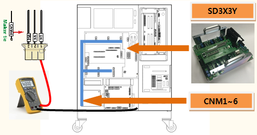
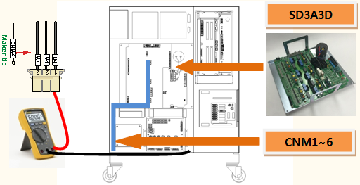
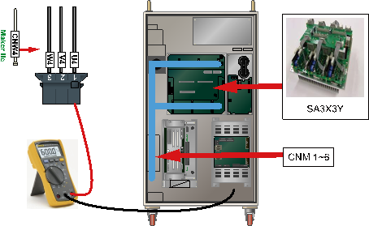
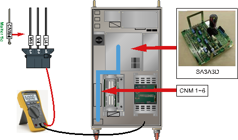

기존 에러코드: E0112 (○축) IPM 폴트
1.1.62.1. 개요
모터를 구동하는 서보 구동장치 내의 스위칭 소자인 IPM(Intelligent Power Module)에서 폴트 출력이 발생하였습니다. IPM 폴트는 방열판의 온도 상승, IPM의 제어전압 저하 및 과전류 출력에 의해 발생할 수 있는데, 본 에러는 서보 Off상태에서 IPM 폴트가 검지된 경우입니다. 서보 Off상태에서는 IPM에서 제어전압 저하만 검사하므로 앰프의 Gate 구동전원을 확인 점검하십시오.
1.1.62.2. 원인 및 점검방법
|
< 서보 Off상태에서 IPM 폴트 에러가 발생하는 경우> (1) 모터 구동용 부품을 점검하여 주십시오. n 해당축의 CNBS 케이블을 교체한 후 에러를 확인하여 주십시오. n 서보 구동장치를 교체한 후 에러를 확인하여 주십시오. n 서보보드(BD544)를 교체한 후 에러를 확인하여 주십시오. |
(1) 모터 구동용 부품을 점검하여 주십시오.
모터를 구동하는 서보 구동장치는 CNBS 케이블을 통하여 서보 보드(BD544)에서 지령을 입력받고, 내부의 증폭회로 전류 출력은 각 축별 커넥터로 연결된 배선에 의해 모터에 전달됩니다.
n 서보 구동장치에 접속하는 출력 케이블 점검
서보 구동장치에서 모터로 연결되는 배선의 상태를 점검합니다. 점검 시에는 제어기의 전원을 OFF한 상태에서 커넥터를 서보 구동장치에서 분리한 후 케이블 측의 각 상과 접지간 저항 값을 측청하여 단락여부를 확인하여 주십시오.

(a) Hi5a-S00 제어기

(b) Hi5a-S30 제어기

(c) Hi5a-N00 제어기

(d) Hi5a-N30 제어기
그림 1.177 서보 구동장치 출력 케이블 점검
n 서보 구동장치의 교체 점검
서보 구동장치를 교체한 후 에러가 발생하지 않으면 서보 구동장치의 불량입니다. 서보 구동장치를 정상품으로 교체하여 주십시오.
Ø Hi5a-S제어기
l 중형 로봇용 서보 구동장치: SD3X3Y
l 소형 로봇용 서보 구동장치: SD3A3D
Ø Hi5a-N제어기
l 중형 로봇용 다이오드 모듈 : SD1L2C
l 소형 로봇용 서보 구동장치 : SA3A3D
n 서보 보드(BD544)의 교체 점검
서보 보드(BD544)를 교체한 후 에러가 발생하지 않으면 서보 보드(BD544)의 불량입니다. 서보 보드(BD544)를 정상품으로 교체하여 주십시오.